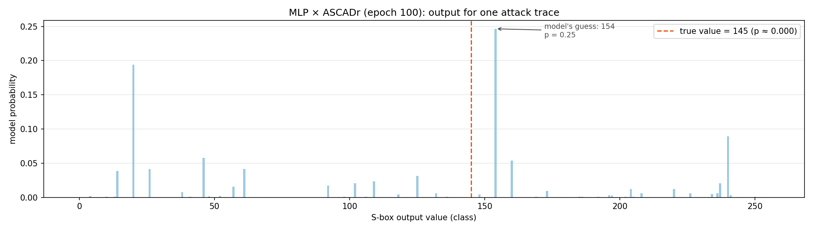
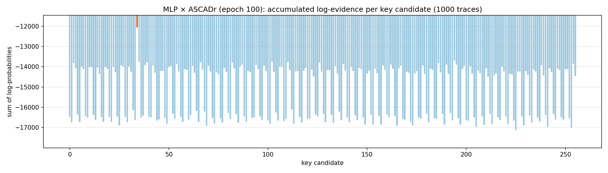
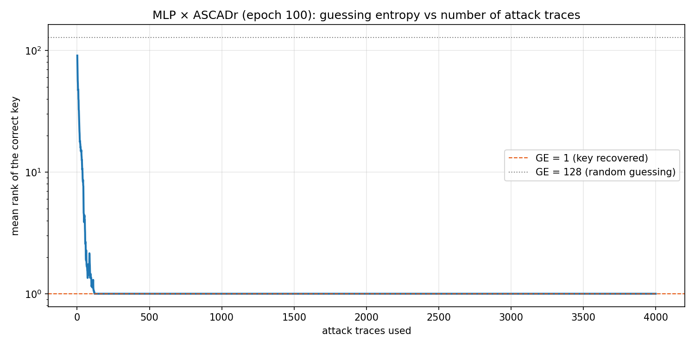

Chapter 4 — The attack
Chapter 3 left one question open. The trained model outputs probabilities over intermediate values — it never says "key byte 0x22", it says "value 145, probability 0.25". This chapter closes the gap: how 256 such probability statements, accumulated over many traces, single out one key byte.
Knowing the plaintext
The attacker is not empty-handed. The attack rests on one assumption, satisfied in most realistic scenarios (smart cards, authenticators, tokens): the plaintext is known. It was sent to the device in the clear, or the attacker chose it — and the datasets of Chapter 2 store it right next to every trace. The key, on the other hand, never leaves the chip.
So the attacker's seat is: knows the input, measures the power, wants the key.
One key byte, 256 hypotheses
A key byte has 256 possible values. The attacker's move is to enumerate all
of them. Recall from Chapter 1 how the key enters the
power consumption: in the first round, each plaintext byte is XOR-ed with one
key byte and passed through the S-box. So for an attack trace with known
plaintext byte p, each candidate g predicts exactly one intermediate
value: Sbox[p ⊕ g].
Concretely, for the first ASCADr attack trace (p = 0x8e):
candidate g = 0x00 → Sbox[0x8e ⊕ 0x00] = value 25
candidate g = 0x22 → Sbox[0x8e ⊕ 0x22] = value 145 ← the key actually used
candidate g = 0xff → Sbox[0x8e ⊕ 0xff] = value 163
Only one row matches what the device actually computed. Every candidate thus writes its own "would-be truth" over the whole attack set — the dataset object ships this as a 256 × n_attack matrix, one row per candidate.
flowchart LR
P["plaintext byte p<br/>(known)"] --> X1["Sbox[p ⊕ g1]"]
P --> X2["Sbox[p ⊕ g2]"]
P --> XN["... Sbox[p ⊕ g256]"]
M["model<br/>p(value | trace)"] --> R["add up evidence<br/>per candidate"]
X1 --> R
X2 --> R
XN --> RTwo boundaries of the attack, worth fixing now:
- One byte at a time. The AES key has 16 bytes; this procedure recovers one — here byte 2, the target byte fixed by the study (see the datasets guide appendix). Recovering the full key means repeating the attack for every byte position.
- The model still knows nothing about keys. It only assigns probabilities to values. The key ranking is manufactured by the enumeration above — the attacker's math, not the network's.
One trace is not enough
Feed one attack trace to the epoch-100 model and look at its output:

The output is confident (one class collects a quarter of the probability
mass) but it is not the true value (dashed line). This is the masking
countermeasure of Chapter 2 doing its job: a single trace
carries the masked value Sbox[plaintext ⊕ key] ⊕ mask, and without the
mask the network can only guess. Over 500 attack traces, the model's best
guess is right on only 4; the true value receives about twice the uniform
probability (0.0089 vs 0.0039) — weak, but systematically above chance.
That sliver of signal is the crack the attack exploits.
Accumulating evidence
How do weak per-trace signals add up to a strong one? Through probabilities — and through logarithms.
If traces are independent measurements, the combined probability of a candidate's story is the product of the per-trace probabilities. Products of many small numbers underflow to zero in floating point, so the standard trick is to take logs: the product becomes a sum of log-probabilities, and sums are well behaved. A two-trace example:
candidate g implies values with model probability 0.02 and 0.05:
evidence(g) = log(0.02) + log(0.05) = −3.9 − 3.0 = −6.9
candidate h implies values with model probability 0.01 and 0.20:
evidence(h) = log(0.01) + log(0.20) = −4.6 − 1.6 = −6.2
Candidate h is already ahead after two traces, even though g won the
second one alone. Every trace casts a vote for every candidate; the winner
is the candidate whose votes are consistently least bad.
Applied to the real attack set — for each of the 256 candidates, sum the model's log-probability of the value that candidate implies, over 1,000 traces:

One orange bar stands out: the true key byte, 0x22, with accumulated
evidence −12,065 against −13,694 for the best wrong candidate (a margin of
about 1,600 — in combined probability, a factor of e^1600 in favor). The
model never spoke about keys, yet summing its verdicts over 1,000 traces
leaves the true candidate far ahead of the 255 runners-up.
How fast does the winner separate? In the notebook's fixed run of traces, the true key's rank falls from 81 (one trace) to 30 (five traces) to 1 (twenty traces). The exact count depends on which traces are used — which is why the standard metric averages over many draws.
Guessing entropy: scoring a key recovery
The guessing entropy (GE) is that averaged metric. The procedure:
- Draw a random subset of the attack traces.
- Accumulate the log-evidence of every candidate over the subset, and rank the 256 candidates.
- Average the true key's rank over many draws. That average is the guessing entropy: GE = 1 means the attack points at the correct key; GE ≈ 128 means blind guessing.
The notebook runs 40 draws of 4,000 traces (seeded, so the figure is reproducible):

The curve collapses from ~128 to 1 within roughly 100 traces, and the correct key holds rank 1 from trace 86 on. In practical terms: about 86 power measurements of the device are enough to identify one key byte with certainty — against 256 pure guesses. Each trace contributed only a whisper of evidence; combined, the whispers decide.
The exploration notebook
Everything above — the hypothesis table, the single-trace prediction, the 500-trace masking statistics, the evidence chart, and the guessing-entropy computation — is worked through in the attack notebook. It runs on CPU in minutes, no training required.
One question is still untouched. Everything here used the finished model — the weights after epoch 100. But the checkpoints of Chapter 3 hold the model after every epoch. The study's real question is: when, during those 100 epochs, did this attack become possible? That is the feature-emergence question, and it is where we go next.
← Previous: Chapter 3 — The models · Index · Next: Appendix — Datasets guide →